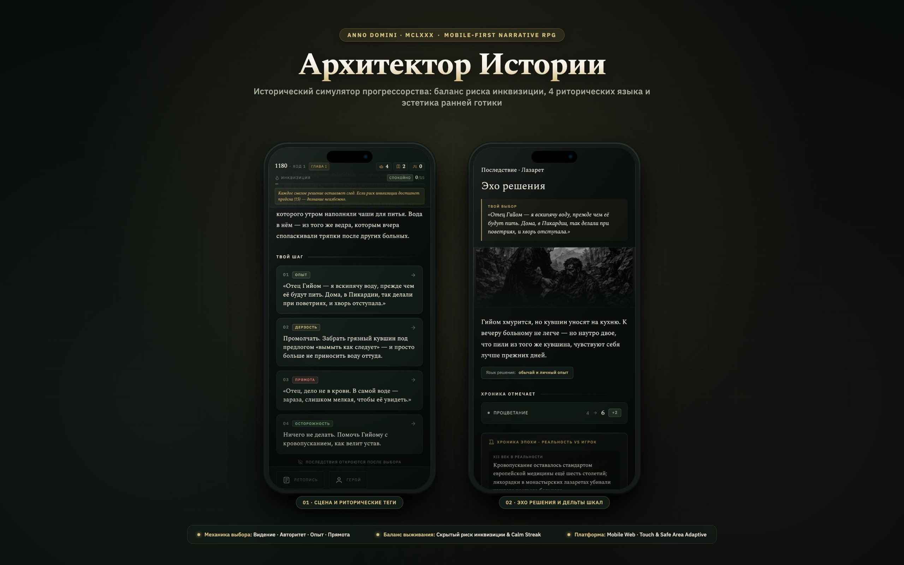

Архитектор Истории: Anno Domini 1180
Как упаковать знание XXI века в реалии ранней готики и создать интерактивный опыт прогрессорства с глубоким балансом риска, богословия и мобильной эргономики.
▲ Реальный геймплей: выбор реплики по риторическому тегу и анимация последствий («Эхо решения»)

Архитектор Истории · Mobile Narrative RPG
Два ключевых экрана в мокапе iPhone 17 Pro: сцена выбора с риторическими тегами и экран «Эхо решения»
Контекст и проблематика
Большинство текстовых RPG и визуальных новелл страдают от двух крайностей: они либо представляют собой монотонные «простыни текста» без внятной обратной связи, либо превращаются в казуальные свайперы без глубины сопереживания.
Парадокс прогрессора
Человек из XXI века не может просто объявить в 1180 году «это бактерии» или «давайте построим стрельчатую арку». За такое ждет костер инквизиции. Каждая инновация должна быть искусно замаскирована под обычай, откровение или авторитет отцов церкви.
Мобильная эргономика
Игроки читают со смартфонов на ходу: 80% экранного времени приходится на зоны комфорта большого пальца. Необходим интерфейс без промахов, с поддержкой зон Dynamic Island, тактильной отдачей и нулевым порогом входа.
Прозрачность последствий
Игроку важно понимать, почему его решение привело к росту благосостояния или аресту. Требовалась система риторических тегов, подсказывающая архетип действия без дешевых спойлеров к сюжету.
Сравнительный анализ игровых паттернов
Мы проанализировали признанные эталоны жанра, чтобы объединить лучшее: лаконичность Reigns, историческую каллиграфию Pentiment и вариативность Choice of Games.
| Проект | Сильные стороны | Слабые места для нашего кейса | Что мы позаимствовали / переосмыслили |
|---|---|---|---|
| Reigns / Her Majesty | Мгновенный темп, элегантный баланс 4 шкал, управление одной рукой. | Поверхностный нарратив, случайные смерти без драматургической глубины. | Балансировку 4 шкал + добавили скрытый риск и систему риторики. |
| Pentiment | Аутентичная средневековая каллиграфия, историческая глубина, психологизм. | Только десктоп/консоли, длинные немобильные сессии, высокий барьер. | Шрифтовую пару (Spectral) и аутентичную гравюрную графику Дюрера. |
| Choice of Games | Разветвленные древья сюжета, глубокая RPG-статистика. | Абсолютное отсутствие визуального ряда («книга в браузере»), скучный UI. | Атмосферные ключевые арты к каждой локации и экран «Эхо решения». |
| Архитектор Истории (Наш проект) | Синтез: мобильная эргономика свайпа/кликов + исторический литературный язык + риторические стили + мгновенная дельта-обратная связь. | ||
«Интерфейс исторической игры должен дышать средневековым пергаментом, но подчиняться законам современного продуктового дизайна: мгновенная реакция на касание, читаемость с 30 см и нулевой визуальный шум».
— Принцип дизайн-системы проектаМеханика 4 риторических языков
Чтобы игрок чувствовал вес своих решений, каждый вариант ответа маркируется риторическим стилем («Языком решения»). Это позволяет предвидеть характер эффекта на параметры обители:
Свет и Богословие
Отсылки к мистическому озарению и философии Сугерия: красота витражей как путь к Богу.
Ремесло и Травы
Практический крестьянский быт: очистка колодца, трёхполье, целебные коренья лазарета.
Логика XXI века
Чистый расчет, анатомия, разоблачение суеверий без оглядки на догматы.
Шкала риска и «Заметание следов»
Подозрение инквизитора Раймунда растет при дерзких шагах. Но если игрок совершает 3 спокойных выбора подряд («Опыт» или «Авторитет»), запускается механика Calm Streak — инквизиция теряет след и риск оседает на 1 пункт.
Ранговая прогрессия и Казна
По мере накопления Влияния монах Лука растет в сане: Монах → Лекарь → Советник → Учёный → Архитектор. Ранг «Советник» разблокирует управление Казной монастыря, открывая грандиозные стройки.
Визуальный язык средневековой роскоши
Интерфейс сочетает благородные тёмные тона с акцентами сусального золота и витражного стекла, избегая при этом аляповатого псевдо-скевоморфизма.
Шрифтовая пара
Spectral (Serif) — антикварная гарнитура для заголовков, цитат и нарратива летописи, передающая дух книжного переплета.
IBM Plex Sans — гротеск для числовых шкал, рангов, меток и интерфейсных кнопок, обеспечивающий мгновенную считываемость на экранах retina.
Тактильный фидбек и микроанимации
При тапе по выбору срабатывает мягкий виброотклик (12ms haptic через navigator.vibrate), а экран мягко растворяется (dissolve 160ms) перед появлением дельт последствий, создавая физическое ощущение перелистывания страниц хроники.
Поддержка Notch и Safe-Area
Плавающий верхний HUD и нижняя шторка летописи скомпонованы с учетом вырезов Dynamic Island и безопасных зон современных смартфонов: padding-top: max(32px, env(safe-area-inset-top)).
Испытайте «Архитектора Истории» лично
Пройдите 5 глав, примите судьбоносные решения и проверьте, сумеете ли вы построить собор Сен-Дени, не попав на костер инквизитора брата Раймунда.
Открыть живую игру в браузере